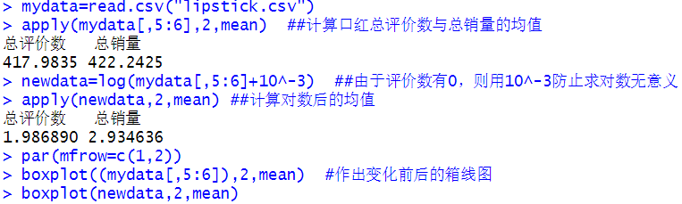
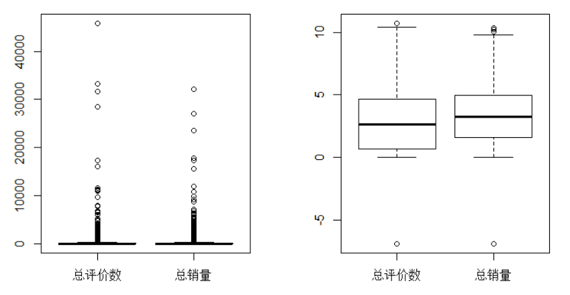
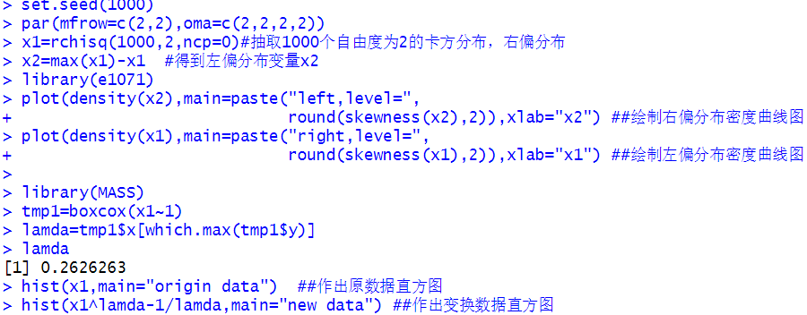
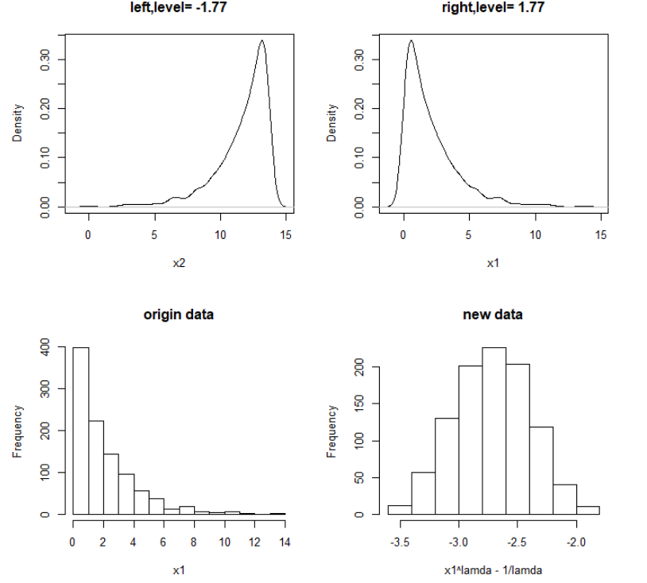
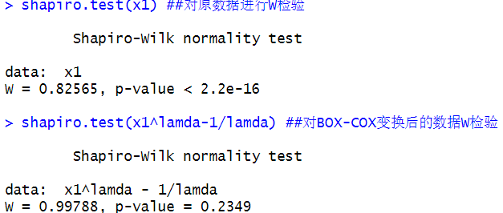
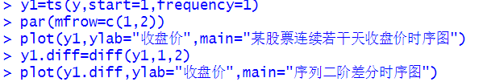
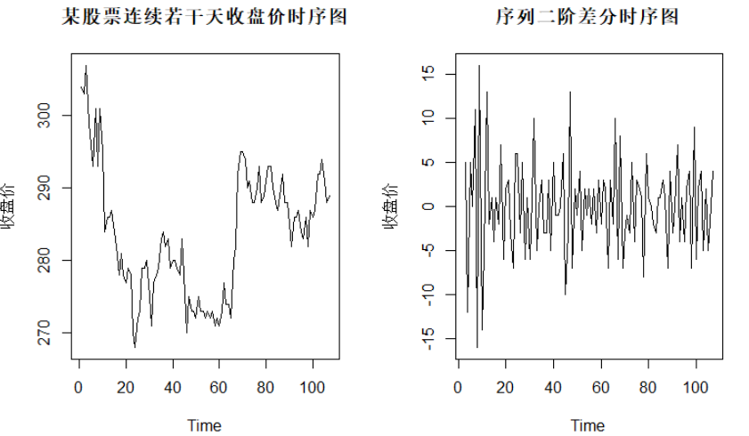
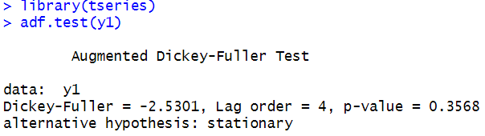
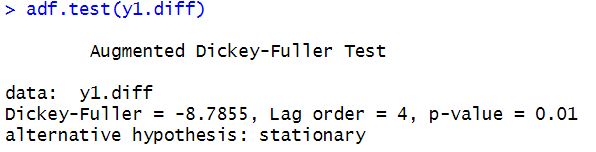

(1)对数变换
使用的数据源于从某销售网站抓取1600多条各种口红的销售数据。该数据集包括口红品牌、描述分、价格分、质量分、服务分、总评价数、总销量数等变量。其中四种评价分数的取值范围为[0,5]，总评价数取值范围为[2,45852]，总销售量取值范围为[3,23496]。以下通过箱型图展示对数变换前后数据特征的差异，运行结果如下：


由上图可知，原数据集口红的总评价与总销量的箱线图并没有发挥“五数概括”的作用，呈现出非常多的离群点；而采用对数变换后，我们可以很清晰地知道总评价数与总销量的均值。由此可见，对数变换在数据压缩方面可以起到非常好的作用
(2)BOX-COX变换
在R中随机生成1000个卡方分布(呈右偏分布)随机数，作出左偏分布与右偏分布的密度曲线图，并通过比较原数据与变换后数据的直方图来观察变换前后的差异，运行结果如下：


从上图可知，当偏度大于0时，总体密度曲线的重尾在右侧，呈现“右偏分布”；当偏度小于0时，总体密度曲线的重尾在左侧，呈现“左偏分布”。而对原数据作BOX-COX变换后，原数据很明显地从右偏分布转化为对称分布。
为了进一步确认该对称分布是否为正态分布，对其进行W检验。

由W检验的原假设为数据服从正态分布，从输出结果来看，原数据的P值远小于0.05，拒绝原假设，则有充分的理由认为原数据为非正态分布；而通过BOX-COX 变换后的数据检验的P值为0.2349，大于0.05，则有充分理由认为变换后的数据为正态分布。
(3)差分运算
使用的数据集来自某股票连续若干天的收盘价，从时序图与假设检验两个角度判断差分运算是否能将非平稳序列转化为平稳序列。运行结果如下所示：


上述分析是从时序图角度进行的，由上图可知，原时序图反映出数据具有很明显的非平稳序列的特征；而通过对其进行二阶差分后，新序列几乎在0值附近上下波动，呈现出非常明显的平稳序列的特征。


上述分析是从假设检验角度分析的，主要使用的是tseries包下的单位根检验。该检验的原假设为序列为非平稳序列。从检验结果可知，对原序列的检验P值为0.3568，远大于0.05的显著性水平，故接受原假设，即有理由认为原序列是非平稳序列；而差分后的序列检验的P值小于0.05，则可认为新序列变为了平稳序列。这与前面时序图的直观分析保持了一致